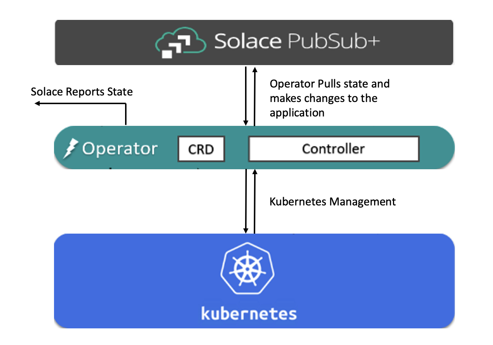
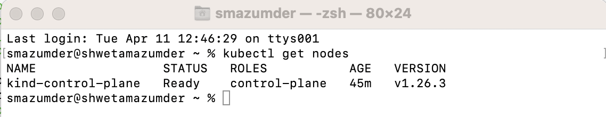
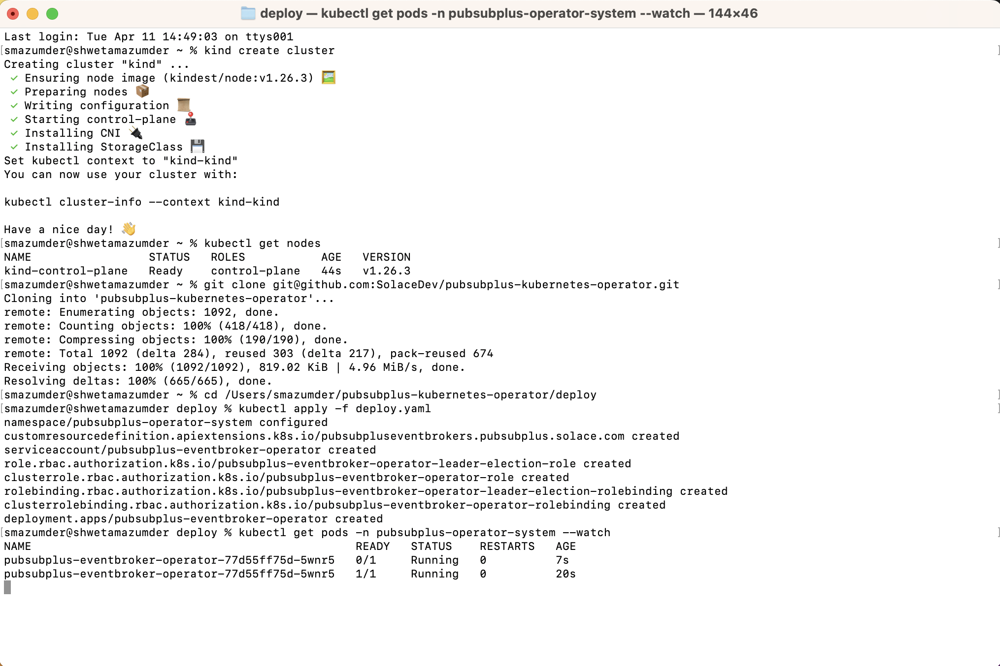
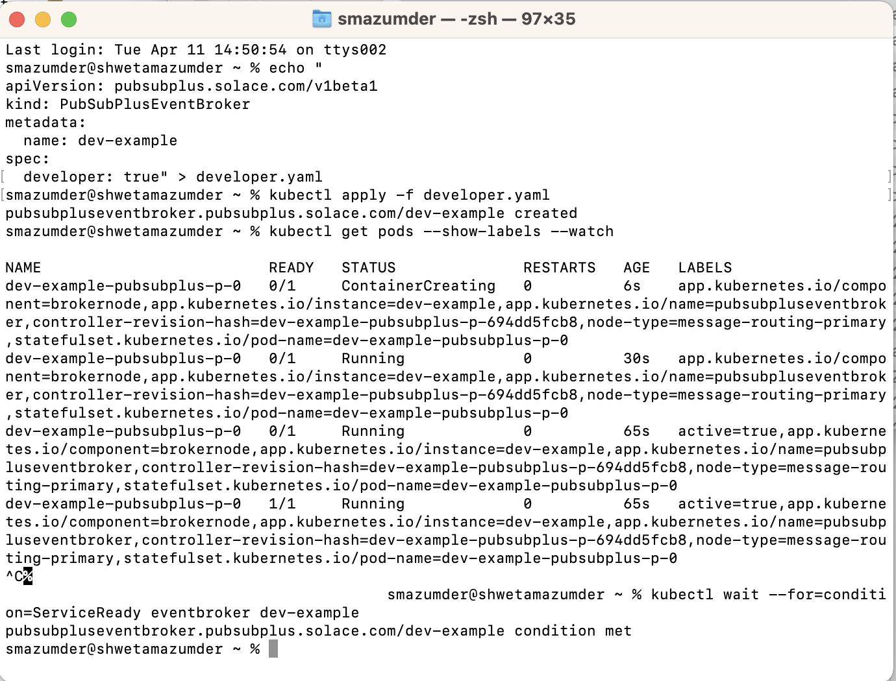
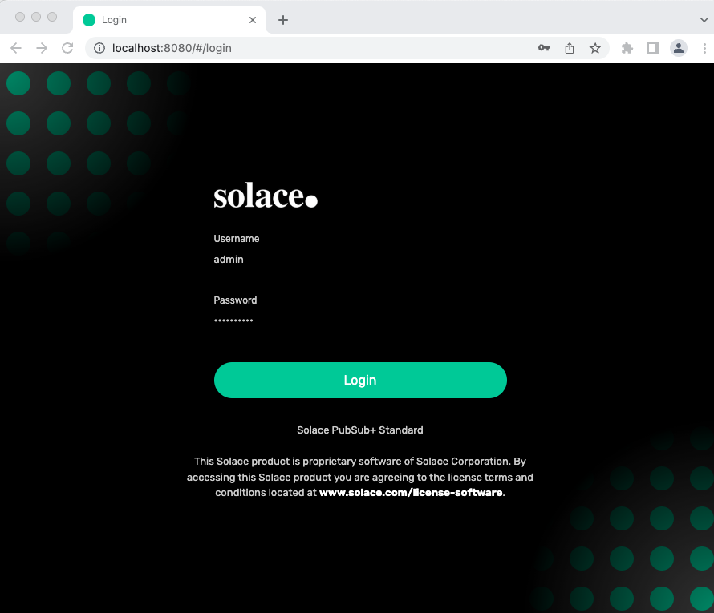
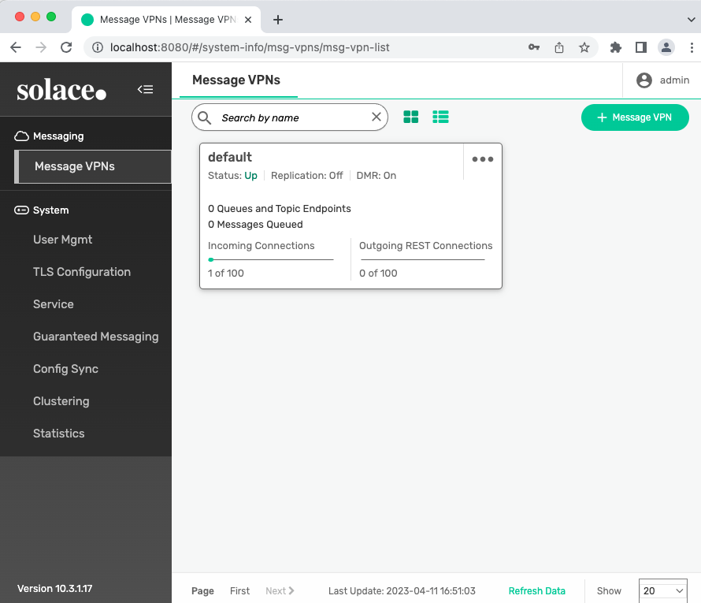

Hello and Welcome! If you are wondering how to use our Operator , then you are in the right place!
This codelab will show how to:
- Setup a kubernetes environment with kind
- Install the Solace Pubsub+ Event Broker Operator in kubernetes
- Deploy a dev instance of Solace Pubsub+ Event Broker using the Operator
- Test the Pubsub+ Event Broker deployement and login to Pubsub+ Manager

You will need a Kubernetes Cluster to deploy the Operator. There are several options available on Windows, Mac and Linux to setup a Kubernetes Cluster such as, Docker Desktop , Rancher Desktop, kubeadm, minikube etc.
I will be using kind to create my Kubernetes Cluster for today's tutorial. It creates the cluster which spins up Docker Containers acting as nodes.
We need to make sure the below installations are complete and successful before we create a cluster using Kind:
- Install Docker Desktop on macOS. For other OS options you can visit Docker.
- Install Kubernetes command-line tool kubectl on macOS. For other OS options you can visit:
kubectl for Linux
kubectl for Windows
Below steps will help you create a kubernetes cluster in Kind and setup the environment for installing the Pubsub+ Event Broker Operator.
1. Install Kind On macOS
Option A: Installing via Homebrew
brew install kind
Option B: Installing from Release Binaries
# for Intel Macs
[ $(uname -m) = x86_64 ]&& curl -Lo ./kind https://kind.sigs.k8s.io/dl/v0.18.0/kind-darwin-amd64
# for M1 / ARM Macs
[ $(uname -m) = arm64 ] && curl -Lo ./kind https://kind.sigs.k8s.io/dl/v0.18.0/kind-darwin-arm64
chmod +x ./kind
mv ./kind /some-dir-in-your-PATH/kind
For other install options visit Kind Installation.
2. Create Kubernetes Cluster using Kind
kind create cluster
3. Verify that the Kubernetes Environment is ready
# This command returns the list of worker nodes and their status
kubectl get nodes

Next Step is to install the Operator
An operator is a containerized application that works with the Kubernetes Operator Framework to deploy, manage and monitor other containerized applications in a declarative way. The PubSub+ Operator deploys the PubSub+ Event broker in stand-alone or high-availability configurations. The User Guide for the PubSub+ Operator describes all of its capabilities.
You can install the Operator in two ways:
Option A: Operator Hub and OLM install
Follow the steps from OperatorHub to first setup OLM, then to install the PubSub+ Event Broker Operator. Click on the Install button to see the detailed instructions.
Option B: Direct Install
Today, you will learn to do the direct install.
# clone the directory
git clone git@github.com:SolaceProducts/pubsubplus-kubernetes-operator.git
# cd to the pubsubplus-kubernetes-operator/deploy folder and apply deploy.yaml
# Manifest creates a namespace and all K8s resources for the Operator deployment
kubectl apply -f deploy.yaml
# Wait for deployment to complete
kubectl get pods -n pubsubplus-operator-system --watch

Next Step is to install the Event Broker
We are going to deploy a dev instance of the Solace Pubsub+ Event Broker using the Operator. Below steps are creating the "developer.yaml" that contains the configuration which the operator will deploy. The format of the template is in PubSub+ Operator API Parameters Reference . Then you are using kubectl to deploy the template.
Minimum-footprint Deployment for Developers
# This command returns the list of worker nodes and their status
# Create deployment manifest
echo "
apiVersion: pubsubplus.solace.com/v1beta1
kind: PubSubPlusEventBroker
metadata:
name: dev-example
spec:
developer: true" > developer.yaml
# Then apply it
kubectl apply -f developer.yaml
# Wait for broker deployment pods to be ready
kubectl get pods --show-labels --watch
# Check service-ready
kubectl wait --for=condition=ServiceReady eventbroker dev-example

Next Step is to test the deployment
In this section we are going to check the event broker deployment status, get information about the service name and type to access the broker services, and obtain the secret that contains the credentials to be used for admin access.
1. Check the Event Broker Status
kubectl describe eventbroker dev-example
2. Obtain the management admin password
ADMIN_SECRET_NAME=$(kubectl get eventbroker dev-example -o jsonpath='{.status.broker.adminCredentialsSecret}')
# This command returns the management "admin" user's password
kubectl get secret $ADMIN_SECRET_NAME -o jsonpath='{.data.username_admin_password}' | base64 -d
3. Obtain the IP address to access the broker services
BROKER_SERVICE_NAME=$(kubectl get eventbroker dev-example -o jsonpath='{.status.broker.serviceName}')
# This command returns the broker service's external IP address
kubectl get svc $BROKER_SERVICE_NAME -o jsonpath='{.status.loadBalancer.ingress}'
4. Access the PubSub+ Broker Manager
- In your browser, navigate to the IP address you obtained, using port 8080
http://<ip-address>:8080
Note: If you did not get the external ip address of broker service in step 3 that means there is no external load balancer created. As a workaround, you can run port forwarding in the background.
# Run port forwarding for SEMP
kubectl port-forward svc/$BROKER_SERVICE_NAME 8080:8080
# Now you can access to localhost at port 8080 and login to Pubsub+ Manager
http://localhost:8080
- Login as user
adminwith the management admin password you obtained. - Use the Broker Manager built-in Try-Me tool to test messaging.


This codelab shows how the operator makes an event broker deployment easy by simply applying the yaml file. We have deployed a dev instance of the Pubsub+ Event Broker using the Operator in a Kubernetes cluster, where, Kind is used to run Kubernetes locally on a mac machine.
Checkout Kubernetes Operator - Quickstart for more deployment options.

Thanks for participating in this codelab! Let us know what you thought in the Solace Community Forum! If you found any issues along the way we'd appreciate it if you'd raise them by clicking the Report a mistake button at the bottom left of this codelab.